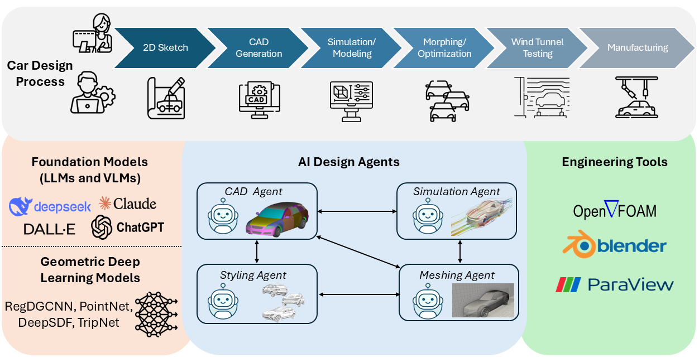
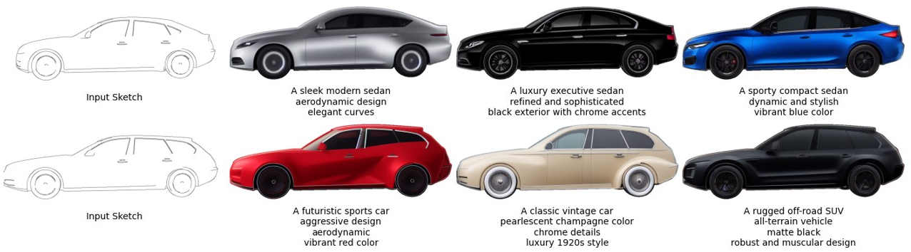
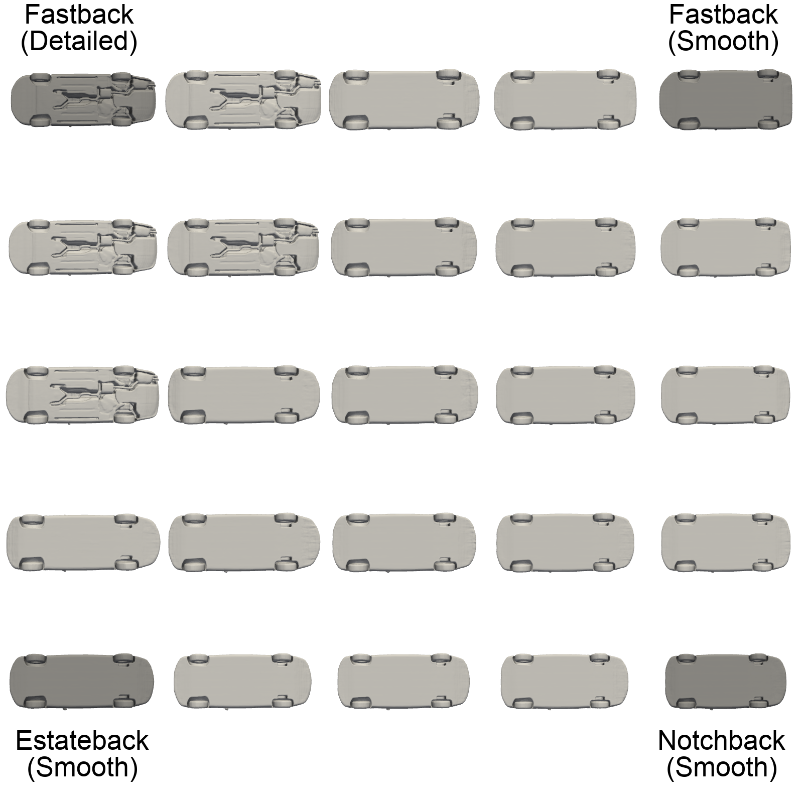
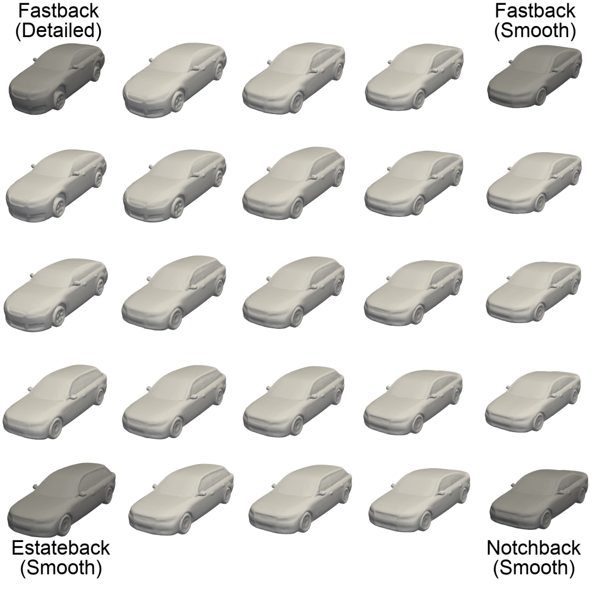
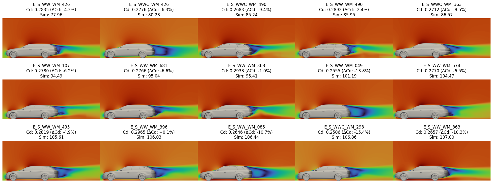

Results & Demonstrations

Figure 1
AI Design Agents Framework for Automotive Design
Overview of our multi-agent system integrating foundation models (LLMs and VLMs),
geometric deep learning models, and engineering tools. The framework shows how four
specialized agents—CAD Agent, Styling Agent, Meshing Agent, and Simulation Agent—collaborate
to accelerate the car design process from initial sketch to aerodynamic analysis.

Figure 2
Styling Agent: From Sketches to Photorealistic Renderings
Demonstration of the Styling Agent's capability to transform hand-drawn sketches into
diverse, high-resolution car renderings using Stable Diffusion XL with ControlNet.
The agent generates various aesthetic styles including modern sedans, luxury vehicles,
sports cars, vintage designs, and rugged SUVs, each with distinctive visual characteristics
and color schemes based on text prompts.


Figure 3a
3D Shape Interpolation (Bottom View)
DeepSDF-based interpolation between fastback (detailed/smooth),
estateback, and notchback configurations showing underbody variations.

Figure 3b
3D Shape Interpolation (Front View)
Front perspective of shape morphing demonstrating smooth transitions
in the learned latent space for automotive geometries.

Figure 4
Real-time Aerodynamic Analysis via Simulation Agent
Comparative aerodynamic analysis showing velocity field visualizations and drag coefficients
for 15 different car designs from the DrivAerNet++ dataset. Each design shows the car ID,
drag coefficient (Cd), relative performance change, and corresponding CFD simulation results.
The Simulation Agent retrieves these pre-computed high-fidelity simulations in real-time,
enabling immediate performance assessment during the design process.